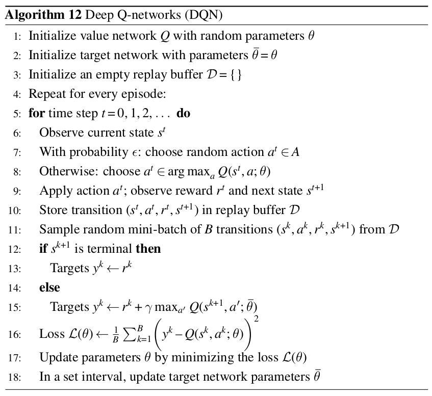

Lunar Lander Project
Objetivo da atividade: implementar um agente capaz de controlar o lunar lander do ambiente env = gym.make('LunarLander-v2').
Entrega básica
Sugestão de atividades:
-
Leia a documentação existente neste link.
-
Implemente um agente capaz de controlar o lunar lander usando o algoritmo Deep Q-Learning.
-
Faça a persistência da rede neural para que depois a mesma possa ser utilizada por um outro script para pousar o lunar lander de forma correta. Ou seja, no seu projeto, além do script para treinamento, você também deverá entregar o script que faz uso do modelo treinado.
-
Para estes dois últimos itens você pode reutilizar o código de Deep Q-Learning implementado nas últimas aulas. Apenas preste atenção na estrutura da rede neural e nos hiperparâmetros.
-
Na documentação do projeto você precisa:
- descrever brevemente qual é o problema, qual é o action space e observation space;
- apresentar a curva de aprendizado na forma de uma gráfico, e;
- apresentar dois gifs animados: o primeiro com o comportamento do agente em uma situação intermediária do treinamento (ou seja, o agente em uma situação onde não sabe executar direito a tarefa) e o segundo com o comportamento do agente na situação final.
-
Não esqueça de adicionar ao projeto o arquivo de
requirements.txtcom todas as bibliotecas necessárias para a execução do projeto.
Ao entregar estes itens você tem garantido um B.
Entrega avançada com DQN
Para ter uma nota A+ neste projeto você precisa:
- Implementar a versão final do algoritmo Deep Q-networks (DQN) como apresentado no pseudo-código abaixo:

Preste atenção em alguns pontos:
- Esta versão do algoritmo faz uso de duas redes (linha 1 e 2);
- Toda a escolha de ação acontece usando a value network \(\theta\) (linha 8);
- A recompença acumulada é calculada usando a target network \(\overline{\theta}\) (linha 15);
- O cálculo da função de perda é feito usando a value network (linha 16); O update dos parâmetros a cada episódio acontece somente na value network \(\theta\) (linha 17), e;
- A target network é atualizada a cada \(C\) episódios (linha 18) - esta atualização é uma simples cópia dos pesos (\(\overline{\theta} \leftarrow \theta\)).
Espera-se que com o uso de duas redes neurais o aprendizado do agente seja mais estável. Ao utilizar apenas uma rede neural o aprendizado do agente pode ser instável porque a rede neural está estimando a função de valor e ao mesmo tempo está sendo atualizada.
- Comparar os resultados alcançados com o uso desta implementação versus a implementação de Deep Q-Learning que já temos disponível em termos de aprendizado do agente.
- Na documentação do projeto você precisa adicionar esta análise.
- No projeto você precisa adicionar os scripts que você implementou.
- Não esqueça de atualizar o arquivo de
requirements.txt, se necessário.
Você deve submeter o seu projeto neste link: https://classroom.github.com/a/UNPTi8Dx do Github Classroom.
Deadline
O deadline para a entrega desta atividade é 20 de março de 2024 (quinta-feira) às 23:30 horas. Este trabalho deve ser feito em grupo com até 4 integrantes.